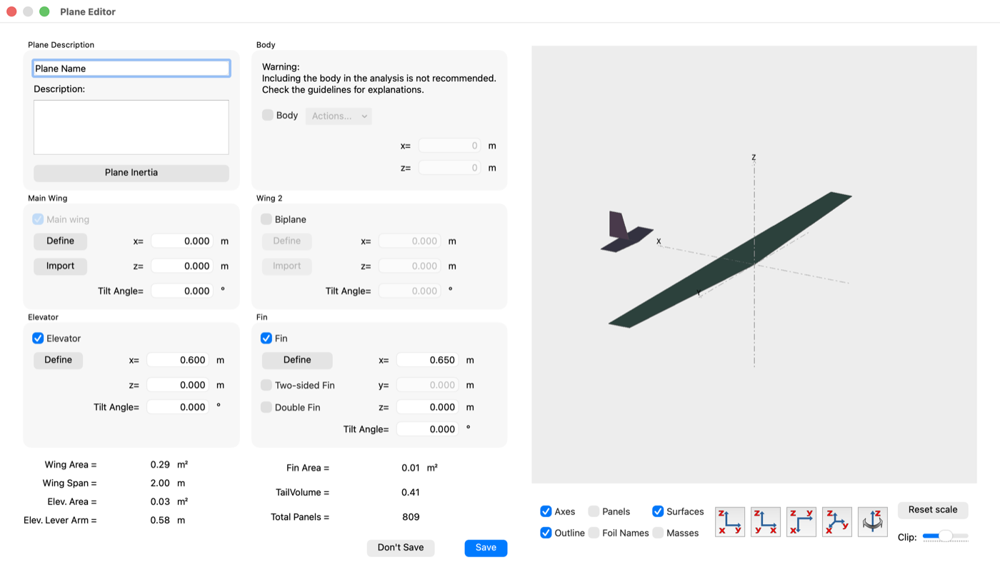
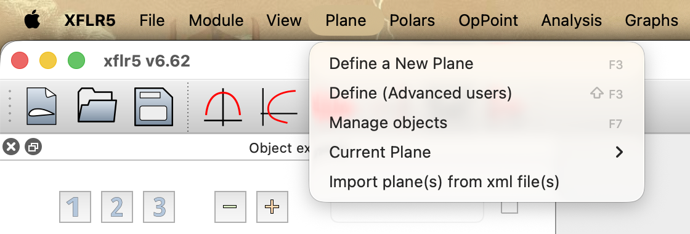
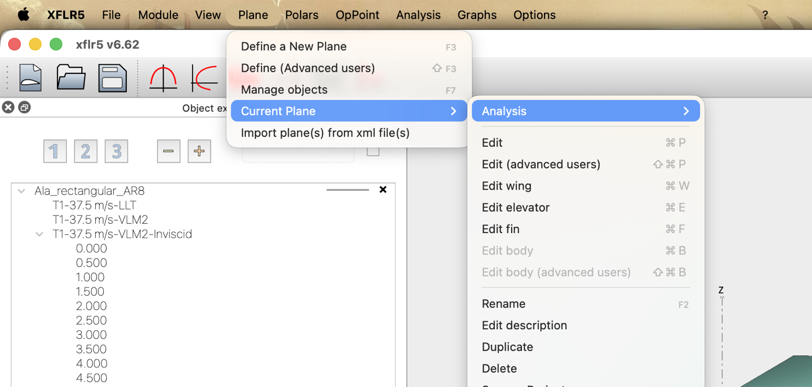
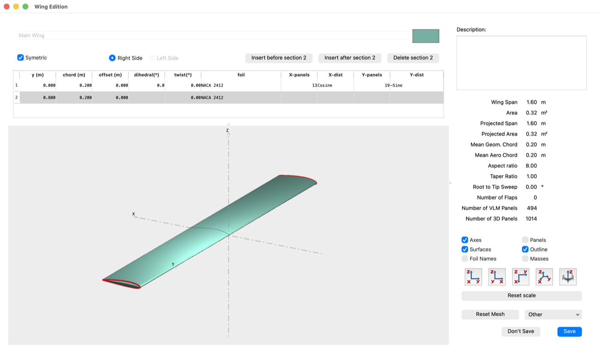
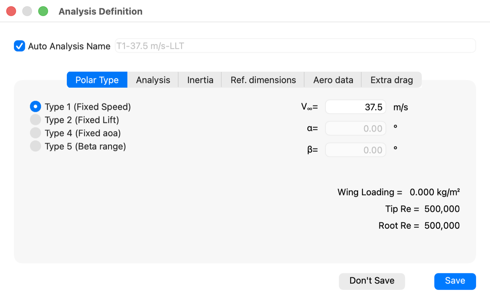
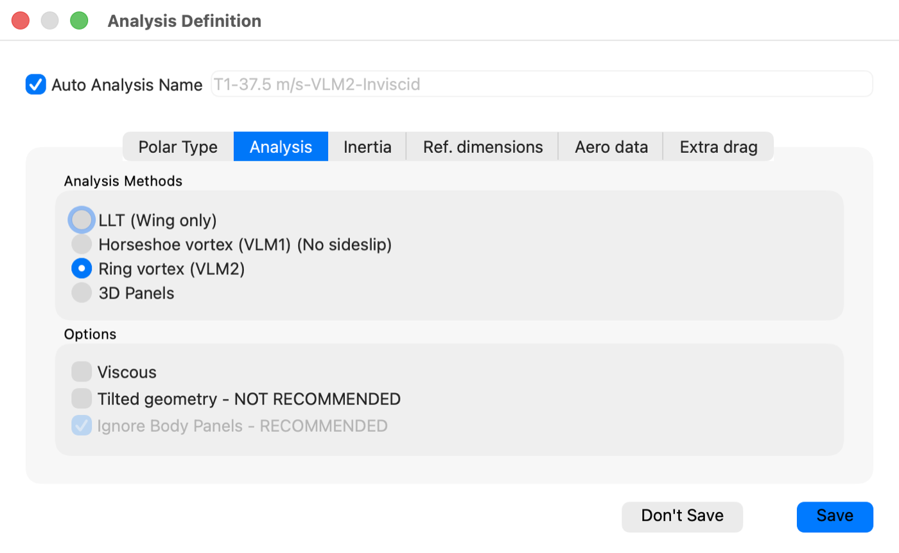
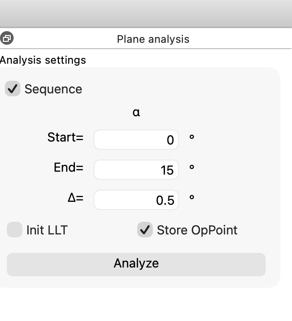
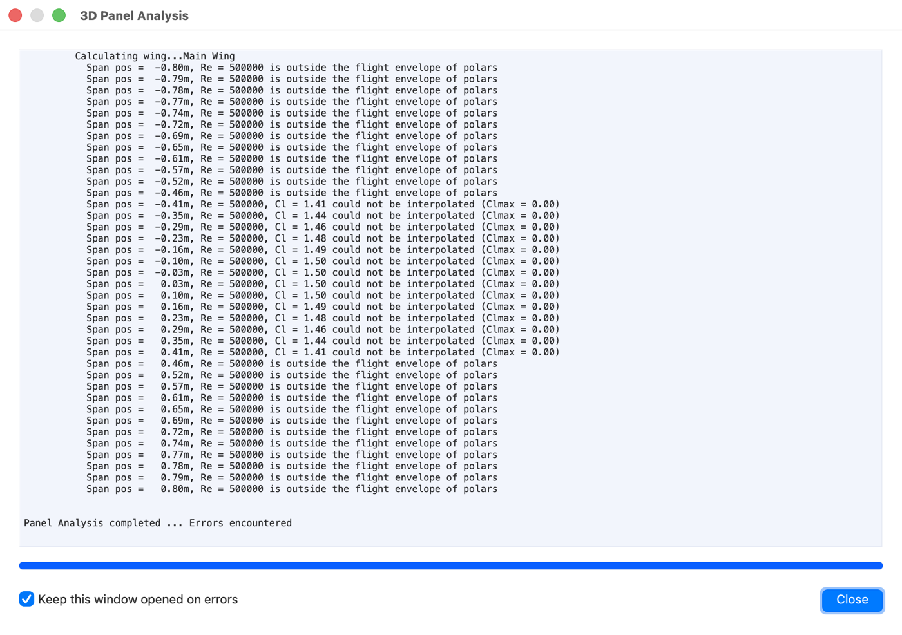
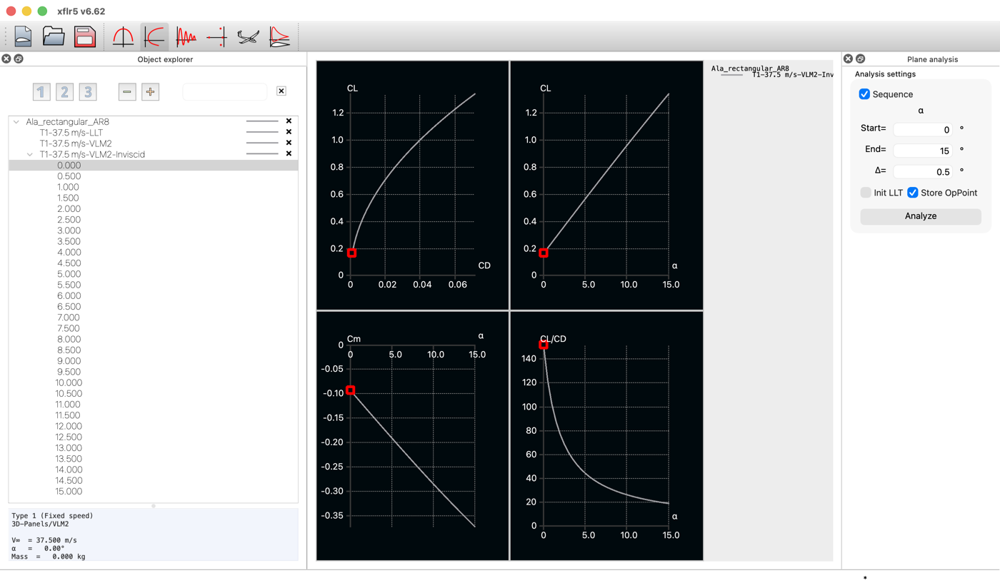
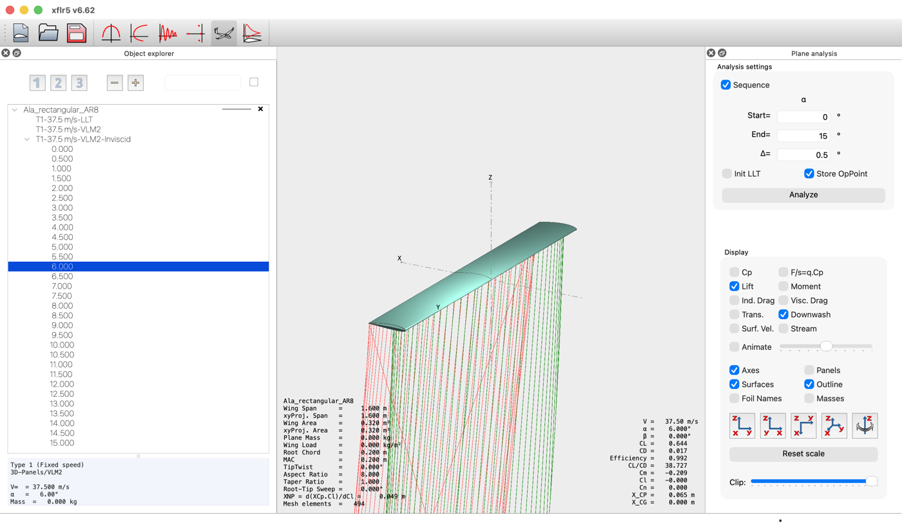

Why a wing lifts less than the airfoil it is built from, where induced drag comes from, and how to measure both in XFLR5 with a vortex-lattice analysis.
XFLR5 · Tutorial 2.1
Del perfil al ala finita
Por qué un ala sustenta menos que el perfil con que está construida, de dónde sale el arrastre inducido, y cómo medir ambas cosas en XFLR5 con un análisis de malla de vórtices.
XFLR5 · Tutorial 2.1
Vom Profil zur endlichen Tragfläche
Warum eine Tragfläche weniger Auftrieb erzeugt als ihr Profil, woher der induzierte Widerstand kommt und wie man beides in XFLR5 mit einem Wirbelgitterverfahren misst.
Estimated reading: 45 minLectura estimada: 45 minLesedauer: ca. 45 minLevel: undergraduateNivel: licenciaturaNiveau: BachelorVerified on XFLR5 v6.62Verificado en XFLR5 v6.62Geprüft mit XFLR5 v6.62
Full English translation in preparation. Each section below carries a summary of its content; the complete text, figures and tables are available in the Spanish version, which the ES button above selects.
Explain why a finite wing lifts less than its own section, choose between the four methods XFLR5 offers, define a wing, diagnose the viscous-interpolation failure, and measure the three-dimensional lift slope and the span efficiency factor.
The physics
Why a wing is not its own airfoil
At the tip, the pressure difference drives a spanwise flow that rolls into two tip vortices. These induce a downwash, so each section sees a stream tilted by \(\alpha_i\) and works at \(\alpha_{\mathrm{ef}} = \alpha - \alpha_i\). Two consequences follow: the wing lifts less than its section, and the section force, being perpendicular to the local stream, tilts backwards and produces induced drag — a resistance that exists even without viscosity.
Scope and limits
Four methods and the assumption that bounds each
LLT is non-linear and uses the section polar, so it captures stall — but it is valid only for a straight wing with no sweep or dihedral. VLM1 and VLM2 are linear and inviscid and therefore never stall; VLM2 admits sweep, dihedral and several surfaces. 3D Panels model thickness at much higher cost. This guide uses VLM2 without the viscous coupling, so every drag figure shown is induced drag.
Orientation
The map of the module
XFLR5 has no standalone wing object: what you define is an aeroplane, and a wing is the first of its surfaces. The same module therefore serves both an isolated wing and a complete aircraft with a tail. For this guide the elevator and the fin are switched off, so every coefficient belongs to the wing alone.
Step 1
Defining the wing
The planform is a table of spanwise stations, each with chord, offset, dihedral, twist and airfoil. Two sections of chord 0.200 m separated by 0.800 m give \(b = 1.600\) m, \(S = 0.320\) m² and \(AR = 8.00\). The right-hand panel recomputes the geometry live and is the check to run before analysing anything.
Step 2
Defining the analysis
The dialogue reports the Reynolds number at root and tip from the local chord, which is how the three-dimensional run is tied to the two-dimensional polar of Tutorial 1.1: \(V_\infty = 37.5\) m/s gives \(Re = 500\,000\) at both. The Analysis tab selects the method and decides whether the profile drag is added by interpolating the section polar.
Step 3
Running it, and reading the failure
With the viscous option on, this wing returns a log full of could not be interpolated and no polar at all. The three-dimensional solution converged; what failed was the lookup of profile drag in the section polar at the local \(c_l\) and Reynolds number. Fix it in the two-dimensional analysis — widen the polar, add Reynolds numbers — or run inviscid and say so.
Step 4
The four wing polars
The same four graphs as in Tutorial 1.1, now for the whole wing. The coefficients take capital letters — \(C_L\), \(C_D\), \(C_m\) — because they are referred to the reference area of the wing and not to the chord of a section. The distinction is the source of half the errors in this topic.
Step 5
The slope falls, the zero-lift angle does not
A least-squares fit over the linear range gives \(a = 0.0808\) per degree \(= 4.629\ \mathrm{rad}^{-1}\), against \(a_0 = 2\pi = 6.283\ \mathrm{rad}^{-1}\) for the section: a fall of 26.3 %. The zero-lift angle, however, is \(-1.99^\circ\) against the \(-2.1^\circ\) measured in Tutorial 1.1 — unchanged, because without twist every section keeps the same mean camber line. Finite span rotates the curve; it does not shift it.
Step 6
Induced drag and the span efficiency factor
Plotting \(C_{D_i}\) against \(C_L^2\) gives a straight line through the origin of slope \(k = 0.0400\), from which \(e = 1/(\pi\,AR\,k) = 0.995\) — the value XFLR5 also reports as Efficiency. At \(\alpha = 6^\circ\) the induced drag alone is one and a half times the profile drag measured in Tutorial 1.1, and it grows with the square of \(C_L\). This is the argument for high aspect ratio.
Step 7
Spanwise loading and downwash
With Lift and Downwash ticked, the three-dimensional view shows what the polars summarise in a number: the load falls to zero at the tip even though the chord is constant, and the downwash grows towards the tip because the loading is rectangular rather than elliptic. The data box condenses the run, including the neutral-point position.
Suggested practice
Four wings, same area, different aspect ratio
Build three more wings with the same airfoil and the same area \(S = 0.320\) m² at \(AR = 4\), 12 and 20, and check that \(1/a\) against \(1/AR\) is a straight line, as lifting-line theory predicts. Suggested practice, not an assignment.
Key values
Three relations and five numbers
\(\alpha_{\mathrm{ef}} = \alpha - \alpha_i\); \(a = a_0/(1 + a_0/\pi e AR)\); \(C_{D_i} = C_L^2/(\pi e AR)\). For the rectangular \(AR = 8\) wing: \(a = 0.0808\) per degree, \(\alpha_{L=0} = -1.99^\circ\), \(e = 0.995\), and at \(\alpha = 6^\circ\), \(C_L = 0.644\) with \(C_{D_i} = 0.0166\).
Common mistakes
Errors of interpretation that invalidate a run
Seven errors of interpretation: expecting the wing to inherit the section's \(c_{l,\max}\); writing \(c_l\) for \(C_L\); calling induced drag a viscous loss; reporting an inviscid \(C_L/C_D\) as the wing's efficiency; reading could not be interpolated as a three-dimensional failure; using lifting-line theory on a swept wing; and comparing wings of different reference area by their \(C_L\).
Sources
References
Anderson, J. D., Jr. Fundamentals of Aerodynamics, 6.ª ed. Nueva York: McGraw-Hill Education, 2017, capítulo 5: teoría de la línea sustentadora de Prandtl, arrastre inducido y factor de eficiencia de envergadura.
Prandtl, L. Applications of Modern Hydrodynamics to Aeronautics, NACA Report 116. Washington, DC: NACA, 1921. El trabajo original de la línea sustentadora.
Katz, J. y Plotkin, A. Low-Speed Aerodynamics, 2.ª ed. Cambridge University Press, 2001, capítulo 12: formulación de los métodos de malla de vórtices y de paneles.
Deperrois, A. Guidelines for XFLR5 y Part IV: Wing analysis. Documentación oficial del programa, donde se detallan las hipótesis de LLT, VLM1, VLM2 y paneles tridimensionales.
Screenshots taken from XFLR5 v6.62 on macOS. The numerical values come from the run documented in figures 11 and 13, exported to text and fitted by least squares; the contrast values were recomputed from lifting-line theory. The XFLR5 project that reproduces the run accompanies this guide. The next tutorial, 2.2, closes the wing block: how the planform governs the spanwise loading — taper, twist and sweep — before moving on to the complete aircraft.
Objetivos de aprendizaje
Qué se debe poder hacer al terminar
El Tutorial 1.1 terminó con una pregunta: si el perfil da \(c_{l,\max}=1.35\), ¿el ala construida con él dará \(C_{L,\max}=1.35\)? La respuesta es que no, y esta guía explica por qué y cuánto. Al terminarla debe ser posible:
Explicar el mecanismo por el cual un ala de envergadura finita sustenta menos que su propio perfil al mismo ángulo geométrico.
Elegir con criterio entre los cuatro métodos que ofrece XFLR5 —línea sustentadora, VLM1, VLM2 y paneles tridimensionales— y enunciar la hipótesis que invalida a cada uno.
Definir un ala en el módulo Wing and Plane Design y comprobar su geometría antes de analizarla.
Ejecutar un análisis y diagnosticar el fallo más común: que el acoplamiento viscoso no encuentre la polar bidimensional.
Medir sobre las polares la pendiente de sustentación tridimensional y contrastarla con la predicción de la teoría de la línea sustentadora.
Verificar que el arrastre inducido crece con el cuadrado de la sustentación y extraer de ahí el factor de eficiencia de envergadura.
La física
Por qué un ala no es su propio perfil
Un perfil es una sección de un ala de envergadura infinita. Esa hipótesis no es un detalle de modelado: es lo que permite tratar el problema en dos dimensiones, porque impide que el fluido se mueva a lo largo de la envergadura.
En un ala real la sobrepresión del intradós y la succión del extradós coexisten en la punta, y el fluido responde a esa diferencia rodeándola. Aparece entonces una componente de velocidad transversal que no existía en el problema plano: el flujo se desvía hacia la punta por debajo y hacia la raíz por encima. Al reunirse en el borde de salida, las dos corrientes con distinta dirección forman una superficie de discontinuidad que se enrolla en dos vórtices de punta.
La consecuencia es el descenso inducido, o downwash: los vórtices arrastran hacia abajo el aire que atraviesa el ala. Cada sección deja de ver la corriente libre y pasa a ver una corriente inclinada un ángulo \(\alpha_i\) hacia abajo. El ángulo con que trabaja realmente la sección es
\[ \alpha_{\mathrm{ef}} = \alpha - \alpha_i \]
De ahí salen las dos consecuencias que ocupan el resto de la guía. La primera: como cada sección trabaja a un ángulo menor que el geométrico, el ala sustenta menos que su perfil al mismo \(\alpha\), y su curva \(C_L\)–\(\alpha\) tiene menor pendiente. La segunda es menos evidente y más costosa.
Figura 1.De dónde sale el arrastre inducido. A la izquierda, la composición de velocidades en una sección: la corriente libre más el descenso inducido dan una corriente local inclinada un ángulo \(\alpha_i\). A la derecha, la consecuencia: la fuerza aerodinámica es perpendicular a esa corriente local, de modo que aparece inclinada \(\alpha_i\) hacia atrás y su proyección sobre la dirección del vuelo es una resistencia. Figura esquemática; los ángulos están exagerados.
La fuerza que genera cada sección es perpendicular a la corriente que esa sección ve, no a la corriente libre. Al estar esa corriente inclinada \(\alpha_i\) hacia abajo, la fuerza aparece inclinada \(\alpha_i\) hacia atrás, y su proyección sobre la dirección del movimiento es una resistencia que no existía en dos dimensiones: el arrastre inducido.
No es una pérdida por fricción. El arrastre inducido aparece en un fluido sin viscosidad y es el precio termodinámico de dejar atrás una estela con energía cinética de rotación. Es el único arrastre que un método no viscoso puede calcular, y en un ala de gran sustentación suele superar al arrastre de perfil.
Alcance y límites
Cuatro métodos y la hipótesis que limita a cada uno
La pestaña Analysis del diálogo de análisis ofrece cuatro métodos (tabla 1). No son cuatro niveles de precisión de lo mismo: son cuatro modelos con hipótesis distintas, y la elección determina qué alas se pueden estudiar.
Método
Qué resuelve
Hipótesis que lo limita
LLT línea sustentadora
La formulación no lineal de Prandtl. Emplea la polar bidimensional del perfil en cada sección, de modo que captura la pérdida
Coloca toda la vorticidad ligada en una recta perpendicular a la corriente. Sólo vale para un ala recta, sin flecha ni diedro, y para una sola superficie
VLM1 vórtices en herradura
Malla de herraduras sobre la superficie de curvatura media. Solución lineal y no viscosa
No admite derrape. Al ser lineal, no hay pérdida: la curva sigue recta indefinidamente
VLM2 vórtices en anillo
Malla de anillos de vorticidad. Admite flecha, diedro, torsión y varias superficies
Sigue siendo lineal y no viscosa, y desprecia el espesor: modela la superficie de curvatura media, no el perfil
3D Panels
Paneles sobre la superficie real del ala, con espesor
Mucho más costoso y sensible al mallado. Sólo se justifica cuando el espesor influye de forma apreciable
Tabla 1.Los cuatro métodos y la hipótesis que los limita. La columna de la derecha es la que decide: en cuanto la geometría viola la hipótesis, el método deja de ser aplicable por mucho que el programa permita seleccionarlo.
Criterio práctico. Para un ala recta y sin diedro, la línea sustentadora es la opción natural: es la única no lineal, usa la polar bidimensional del perfil y por tanto captura la pérdida. En cuanto aparece flecha, diedro o una segunda superficie, deja de ser aplicable y hay que pasar a VLM. Los paneles tridimensionales sólo se justifican cuando el espesor importa.
Esta guía emplea VLM2 por una razón concreta: es el método que el alumno usará en cualquier ala que no sea recta, y su formulación no viscosa aísla limpiamente el fenómeno tridimensional. El arrastre de perfil no aparece en los resultados, y eso es deliberado: todo el arrastre que se ve en esta guía es inducido.
Orientación
El mapa del módulo
El módulo se abre desde Module ▸ Wing and Plane Design, la cuarta entrada del mismo menú que el Tutorial 1.1 usaba para el análisis bidimensional. Al entrar, la ventana está vacía: todavía no hay ningún objeto definido.
Figura 2.El menú Module. El mismo punto de partida que en el Tutorial 1.1, ahora hacia la cuarta entrada: Wing and Plane Design, con atajo ⌘6. Los perfiles cargados en Direct Foil Design siguen disponibles aquí, porque la lista es común a todo el proyecto.
Lo que se conserva del Tutorial 1.1. La lista de perfiles es común a todo el proyecto, de modo que el NACA 2412 cargado en Direct Foil Design —y su polar bidimensional— siguen disponibles aquí. Es lo que permite que un ala use ese perfil en sus secciones sin volver a cargarlo.
La unidad que se define no es un ala: es un avión
XFLR5 no tiene un objeto «ala» suelto. Lo que se define es un avión, y un ala es la primera de sus superficies. Esto sorprende la primera vez, pero tiene sentido: el mismo módulo sirve para analizar un ala aislada y para estudiar la estabilidad de una aeronave completa con cola.

Figura 3.El editor del avión. Aquí se construye la aeronave completa: ala principal, segunda ala o biplano, estabilizador horizontal, deriva y fuselaje, cada uno con su posición y su ángulo de calado. Los recuadros de abajo resumen superficies, envergadura y volumen de cola. Para esta guía se desactivan el estabilizador y la deriva: interesa el ala sola, sin ninguna otra superficie que contamine los coeficientes. El botón Define del bloque Main Wing es el que abre el editor del ala.
Para esta guía se desactivan el estabilizador y la deriva, y queda un avión formado por una sola superficie. Los coeficientes que se obtengan serán entonces exclusivamente del ala, sin contribuciones de cola que habría que descontar después.
Conviene mirar los recuadros inferiores. El editor informa en vivo de superficie alar, envergadura, superficie del estabilizador y volumen de cola. Al desactivar las dos superficies traseras, las tres últimas cifras desaparecen: es la confirmación visual de que se está analizando un ala sola.
Paso 1
Definir el ala
El objeto se crea con Plane ▸ Define a New Plane.

Figura 4.El menú Plane.Define a New Plane (F3) crea el objeto desde cero. Manage objects permite renombrar y borrar los que ya existan.
Se abre el editor del avión de la figura 3. Ahí se desactivan el estabilizador y la deriva, se le pone nombre —sin espacios: el campo los descarta— y se hace clic en Define, en el bloque Main Wing.
Una vez guardado el avión, para volver al editor del ala no hace falta pasar otra vez por el del avión: Plane ▸ Current Plane ▸ Edit wing lleva directamente, y tiene atajo.

Figura 5.Cómo volver al editor del ala. Una vez creado el avión, Plane ▸ Current Plane abre el submenú de edición. Edit wing (⌘W) lleva directamente al editor del ala sin pasar por el del avión, que es el camino que se usa al ajustar la planta. A la izquierda, el explorador va acumulando las polares del objeto seleccionado.
La tabla de secciones
La planta se describe como una tabla en la que cada fila es una estación en envergadura, con su cuerda, su desplazamiento longitudinal, su diedro, su torsión y su perfil. Dos filas bastan para un ala recta: la raíz y la punta.

Figura 6.El editor del ala. La planta se describe como una tabla de secciones: cuerda, desplazamiento, diedro, torsión y perfil en cada estación. El panel derecho recalcula la geometría en vivo y es el control de calidad: envergadura 1.600 m, superficie 0.320 m², alargamiento 8.00, estrechamiento 1.00 y flecha 0.00° confirman que el ala es rectangular.
Comprobación de geometría antes de analizar. El panel derecho recalcula en vivo envergadura, superficie, cuerda media y alargamiento. Con dos secciones de cuerda \(0.200\) m separadas \(0.800\) m se obtiene \(b=1.600\) m, \(S=0.320\) m² y \(AR = b^2/S = 8.00\). Que el estrechamiento salga \(1.00\) y la flecha \(0.00^\circ\) confirma que el ala es rectangular. Si alguno de esos números no coincide con lo previsto, el error está en la tabla y no en el análisis.
El mallado
Las columnas X-panels y Y-panels definen la discretización: 13 paneles en cuerda con distribución coseno y 19 en envergadura con distribución seno, que dan 494 paneles en total. Ambas distribuciones concentran paneles donde el gradiente es fuerte —bordes de ataque y de salida en cuerda, punta en envergadura—. Un mallado insuficiente en la punta subestima el arrastre inducido, que es precisamente lo que se quiere medir.
Paso 2
Definir el análisis
Con el ala guardada, Analysis ▸ Define an Analysis abre un diálogo de seis pestañas. Dos importan aquí.
Pestaña Polar Type: la velocidad fija el Reynolds

Figura 7.Pestaña Polar Type. El diálogo informa del Reynolds en la raíz y en la punta calculado con la cuerda local. Con \(V_\infty = 37.5\) m/s y cuerda de 0.200 m ambos valen 500 000, exactamente el Reynolds al que se calculó la polar bidimensional del Tutorial 1.1.
El tipo de polar tiene el mismo significado que en el análisis bidimensional. Lo nuevo es que el diálogo informa en vivo del Reynolds en la raíz y en la punta, calculado con la cuerda local. En un ala rectangular ambos coinciden, y eso permite elegir la velocidad que reproduce exactamente las condiciones del Tutorial 1.1:
En un ala con estrechamiento la cuerda de punta es menor y su Reynolds también: el diálogo lo muestra, y es la forma de comprobar que ninguna sección queda fuera del intervalo cubierto por las polares del perfil.
Pestaña Analysis: el método y el acoplamiento viscoso

Figura 8.Pestaña Analysis: método y acoplamiento viscoso. Los cuatro métodos y las tres opciones. Aquí se ha elegido Ring vortex (VLM2) y se ha desmarcado Viscous; el nombre del análisis recoge esa decisión con el sufijo -Inviscid, que conviene conservar para no confundir después las polares.
Aquí se elige el método y se decide si el cálculo será viscoso. Con Viscous marcado, XFLR5 resuelve el problema no viscoso y después añade el arrastre de perfil interpolando la polar bidimensional del perfil de cada sección, en el Reynolds y el \(c_l\) locales. Desmarcarlo deja el resultado puramente no viscoso, y el nombre del análisis pasa a llevar el sufijo -Inviscid.
Paso 3
Ejecutar, y saber leer el fallo
El panel Plane analysis pide el intervalo de ángulos. Para esta guía, de \(0^\circ\) a \(15^\circ\) con \(\Delta\alpha = 0.5^\circ\), con Store OpPoint marcado por la misma razón que en el análisis bidimensional: sin él no se conservan las distribuciones en envergadura.

Figura 9.Panel Plane analysis. Define el intervalo del barrido. Init LLT sólo interviene si el método elegido es la línea sustentadora; Store OpPoint conserva las distribuciones en envergadura de cada ángulo, sin las cuales la vista tridimensional queda vacía.
El fallo que hay que saber leer
Con Viscous marcado, esta misma ala devuelve un registro lleno de mensajes y ninguna polar:

Figura 10.El fallo del acoplamiento viscoso. Con Viscous marcado, el cálculo no viscoso converge pero la interpolación del arrastre de perfil falla en todas las estaciones: Re = 500000 is outside the flight envelope of polars en la zona exterior y Cl = 1.41 could not be interpolated en la interior. XFLR5 descarta entonces el punto completo y la polar del ala queda vacía. El mensaje señala un problema en la polar bidimensional, no en el método tridimensional.
Qué significa.Re = 500000 is outside the flight envelope of polars y Cl = 1.41 could not be interpolated no son fallos del método tridimensional: son fallos de la interpolación. El cálculo no viscoso convergió, pero al ir a buscar el arrastre de perfil de cada sección no encontró en la polar bidimensional un punto que correspondiera al \(c_l\) y al Reynolds locales. Cuando eso ocurre en todas las estaciones, XFLR5 descarta el punto entero y la polar queda vacía.
La causa es siempre la misma: la polar del perfil no cubre lo que el ala pide. Se resuelve de tres maneras, en este orden:
1Ampliar el intervalo de ángulos de la polar bidimensional hasta pasar de \(c_{l,\max}\).
2Calcular polares del perfil a varios números de Reynolds que envuelvan los de la raíz y la punta.
3Si sólo interesa el comportamiento tridimensional, desmarcar Viscous y declararlo en el informe.
Paso 4
Las cuatro polares del ala
Con View ▸ Polar View y Graphs ▸ Four Graphs aparecen las cuatro representaciones del ala. Son las mismas magnitudes del Tutorial 1.1 con una diferencia de fondo: ahora son coeficientes del ala completa, y se escriben con mayúscula —\(C_L\), \(C_D\), \(C_m\)— para distinguirlos de los seccionales.

Figura 11.Las cuatro polares del ala. Corrida VLM2 no viscosa del ala rectangular de alargamiento 8 a \(V_\infty = 37.5\) m/s, con 31 puntos de operación de \(0^\circ\) a \(15^\circ\). Obsérvese que los coeficientes llevan mayúscula —\(C_L\), \(C_D\), \(C_m\)— porque son del ala completa y no de una sección.
La convención de mayúsculas no es tipográfica. \(c_l\) es el coeficiente de una sección, adimensionalizado con su cuerda; \(C_L\) es el del ala, adimensionalizado con la superficie de referencia. Confundirlos es el origen de la mitad de los errores de este tema.
Qué debe verse en cada una, y si tiene sentido
Antes de medir nada conviene mirar la forma de las cuatro curvas y preguntarse si es la que corresponde. Un resultado con la forma equivocada no se arregla midiéndolo con más cuidado.
Representación
Forma esperada
Qué la delataría
\(C_L\) frente a \(\alpha\)
Recta creciente, sin máximo, que corta el eje en \(\alpha_{L=0}\) negativo por la curvatura del perfil
Un máximo o una caída: VLM es lineal y no puede entrar en pérdida
\(C_L\) frente a \(C_D\)
Parábola que arranca cerca del origen y se abre hacia arriba, porque \(C_D=C_{D_i}\propto C_L^2\)
Un valor de \(C_D\) apreciable en \(C_L=0\): en un cálculo no viscoso debe tender a cero
\(C_m\) frente a \(\alpha\)
Recta decreciente. No es constante como el \(c_m\) del perfil porque está referida al origen del avión, no al cuarto de cuerda
Pendiente positiva: indicaría un punto neutro por delante del origen elegido
\(C_L/C_D\) frente a \(\alpha\)
Sube desde cero, alcanza un máximo y luego cae, porque el inducido crece más deprisa que la sustentación
Que crezca sin límite: señal de que \(C_D\) no incluye el término inducido
Tabla 2.Qué forma debe tener cada curva. La comprobación se hace por la forma antes que por los valores: una curva con la forma equivocada indica un error de planteamiento que ningún ajuste posterior corrige.
Lo que no debe verse aquí, y es la comprobación más rápida. No hay pérdida: la curva \(C_L\)–\(\alpha\) sigue subiendo hasta el final del barrido. Con VLM eso es lo correcto, porque el método es lineal y no tiene forma de saber que la capa límite se desprende. Si alguna de estas curvas mostrara un máximo y una caída, habría que desconfiar del cálculo, no celebrarlo. La pérdida sólo aparece si se usa la línea sustentadora con la polar bidimensional del perfil detrás.
Paso 5
La pendiente cae, el ángulo de sustentación nula no
Éste es el resultado central de la guía, y se mide directamente sobre la curva \(C_L\)–\(\alpha\).
Un ajuste por mínimos cuadrados sobre el tramo lineal —de \(0^\circ\) a \(8^\circ\), donde la curva es recta— de la corrida documentada en la figura 7 da:
\(a = 0.0808\) por grado \(= 4.629\ \mathrm{rad}^{-1}\), con \(C_L(0^\circ) = 0.1609\) y, por tanto, \(\alpha_{L=0} = -1.99^\circ\).
La pendiente cae
La teoría de perfil delgado da, para el perfil aislado, \(a_0 = 2\pi = 6.283\ \mathrm{rad}^{-1}\). El ala construida con ese mismo perfil rinde \(4.629\), un 26.3 % menos. La teoría de la línea sustentadora predice esa caída con
\[ a = \frac{a_0}{1 + \dfrac{a_0}{\pi\,e\,AR}} \]
que para \(AR = 8\) y carga elíptica (\(e = 1\)) da \(5.027\ \mathrm{rad}^{-1}\), es decir \(0.0877\) por grado. El valor medido queda un \(8.6\ \%\) por debajo, y las dos razones de esa diferencia son instructivas: el ala es rectangular y su carga no es elíptica, y el mallado en la punta es finito. Ambas se pueden poner a prueba, y el ejercicio de esta guía lo hace.
Antes de creerse el número: ¿la curva es realmente recta?
VLM2 es un método lineal, de modo que cabría esperar una recta perfecta. No lo es del todo, y conviene comprobarlo antes de citar una pendiente. Midiendo la pendiente local a lo largo del barrido:
Intervalo de \(\alpha\)
Pendiente local (grado\(^{-1}\))
\(0^\circ\) a \(1^\circ\)
0.0810
\(4^\circ\) a \(5^\circ\)
0.0802
\(8^\circ\) a \(9^\circ\)
0.0785
\(12^\circ\) a \(13^\circ\)
0.0761
\(14^\circ\) a \(15^\circ\)
0.0746
Tabla 3.La pendiente local no es constante. Medida sobre pares de puntos consecutivos de la misma corrida. La caída del 8 % no es aerodinámica: VLM2 es lineal y no puede entrar en pérdida.
La pendiente cae un 8 % entre los extremos del barrido. No es pérdida aerodinámica —un método lineal no puede perder— sino un efecto cinemático: la condición de contorno se impone sobre una geometría que gira con el ángulo de ataque. De hecho, los datos se ajustan mucho mejor a una senoide que a una recta:
El cociente \(C_L/\sin(\alpha-\alpha_{L=0})\) se mantiene constante dentro del \(1.1\ \%\) en todo el intervalo, frente al \(2.5\ \%\) que se desvía la hipótesis de recta.
Consecuencia práctica. La pendiente medida depende del intervalo de ajuste, y por tanto hay que declararlo. Sobre estos mismos datos: \(0.0808\) por grado ajustando de \(0^\circ\) a \(4^\circ\), \(0.0802\) de \(0^\circ\) a \(8^\circ\) y \(0.0787\) de \(0^\circ\) a \(15^\circ\). La cifra que se compara con la teoría es la del intervalo de ángulos pequeños, que es donde la teoría linealizada vale.
El ángulo de sustentación nula no cambia
El Tutorial 1.1 midió \(\alpha_{L=0} \approx -2.1^\circ\) para el perfil NACA 2412 aislado. El ala construida con ese perfil da \(-1.99^\circ\). Prácticamente el mismo valor, y no es casualidad: sin torsión geométrica ni aerodinámica, todas las secciones tienen la misma línea de curvatura media y el mismo ángulo de sustentación nula, de modo que el ala lo hereda intacto. El descenso inducido inclina la corriente, pero no cambia la geometría del perfil.
La conclusión práctica es que la envergadura finita gira la curva, no la desplaza: mismo corte con el eje, menor pendiente. Comparado al mismo ángulo geométrico \(\alpha = 6^\circ\), el perfil del Tutorial 1.1 daba \(c_l = 0.896\) y esta ala da \(C_L = 0.644\): un \(28\ \%\) menos.
Paso 6
El arrastre inducido y el factor de eficiencia
La teoría de la línea sustentadora predice que el arrastre inducido crece con el cuadrado de la sustentación:
\[ C_{D_i} = \frac{C_L^{2}}{\pi\,e\,AR} \]
donde \(e\) es el factor de eficiencia de envergadura, que vale la unidad para una distribución elíptica de sustentación y menos para cualquier otra. La relación se comprueba sobre los datos exportados de la corrida:
Figura 12.El arrastre inducido crece con el cuadrado de la sustentación. Puntos calculados de la corrida de la figura 7, exportados a texto. La recta es el ajuste por mínimos cuadrados forzado por el origen, de pendiente \(k = 0.0400\). Que los puntos caigan sobre ella en todo el intervalo confirma la predicción \(C_{D_i} = C_L^2/(\pi e AR)\) de la teoría de la línea sustentadora, y de la pendiente se despeja \(e = 0.995\).
El ajuste da una recta que pasa por el origen con pendiente \(k = 0.0400\), de donde
XFLR5 reporta ese mismo factor directamente en el recuadro de datos de la vista tridimensional, bajo el rótulo Efficiency: a \(\alpha = 6^\circ\) muestra \(0.992\), que coincide con el ajuste.
Un detalle que conviene no pasar por alto. El factor no sale exactamente constante: crece de \(0.98\) a \(1^\circ\) hasta \(1.00\) a \(15^\circ\). Un valor de \(e\) igual o superior a la unidad es imposible en un ala plana —la distribución elíptica es el óptimo—, de modo que esa deriva no es física: es el error de calcular el arrastre inducido integrando presiones sobre los paneles en lugar de hacerlo en el plano de la estela. En el intervalo útil, de \(2^\circ\) a \(10^\circ\), \(e\) se mantiene entre \(0.985\) y \(0.996\), y ése es el valor que tiene sentido citar.
El orden de magnitud importa. A \(\alpha = 6^\circ\) esta ala tiene \(C_{D_i} = 0.0166\). El arrastre de perfil del NACA 2412 medido en el Tutorial 1.1 en condiciones equivalentes era \(c_d = 0.0104\). El arrastre inducido es, por sí solo, una vez y media el arrastre de perfil — y crece con el cuadrado de \(C_L\), mientras que el de perfil apenas se mueve. En despegue y en viraje sostenido, el inducido domina.
De la expresión anterior se sigue el argumento de diseño más citado de la aerodinámica subsónica: para reducir el arrastre inducido a igualdad de sustentación hay que aumentar el alargamiento. Un planeador tiene \(AR\) de 20 a 30 por esa razón, y un caza lo tiene de 3 porque prioriza otra cosa.
Paso 7
Distribución en envergadura y descenso inducido
La vista tridimensional con las casillas Lift y Downwash marcadas dibuja sobre el ala lo que las polares resumen en un número.

Figura 13.Distribución de sustentación y descenso inducido. Vista tridimensional en \(\alpha = 6^\circ\) con las casillas Lift y Downwash marcadas. En verde, la sustentación por unidad de envergadura, que cae hacia la punta y se anula en ella; en rojo, el descenso inducido. El recuadro inferior condensa la corrida: \(C_L = 0.644\), \(C_D = 0.017\), \(C_L/C_D = 38.7\), \(C_m = -0.209\) y Efficiency = 0.992, que es el factor de eficiencia de envergadura calculado por el propio programa.
Hay tres cosas que leer en esa figura:
La carga no es uniforme. Aunque la cuerda es constante, la sustentación por unidad de envergadura cae hacia la punta y se anula en ella: en el extremo, extradós e intradós se comunican y no puede haber diferencia de presión. Una planta rectangular produce una distribución más plana que la elíptica, y ésa es exactamente la razón de que su \(e\) sea inferior a la unidad.
El descenso inducido no es uniforme. En una carga elíptica sería constante a lo largo de la envergadura —el resultado clásico de Prandtl—; en una rectangular crece hacia la punta, y con él la penalización local.
El recuadro de datos condensa la corrida. A \(\alpha = 6^\circ\): \(C_L = 0.644\), \(C_D = 0.017\), \(C_L/C_D = 38.7\), \(C_m = -0.209\) y \(\mathrm{Efficiency} = 0.992\). También aparece \(XNP\), la posición del punto neutro, que es el dato con el que arranca el estudio de estabilidad longitudinal.
Por qué el \(C_L/C_D\) parece enorme. El valor \(38.7\) corresponde a un cálculo no viscoso: en el denominador sólo hay arrastre inducido. Añadir el arrastre de perfil lo bajaría a un valor realista. Es la contrapartida de haber desmarcado Viscous, y conviene declararlo siempre que se reporte una eficiencia obtenida así.
Práctica sugerida
Cuatro alas, misma superficie, distinto alargamiento
El ejercicio pone a prueba la única afirmación cuantitativa de la guía: que la caída de pendiente la gobierna el alargamiento. Es una práctica sugerida, no una entrega.
Enunciado. Partiendo del ala de esta guía, generar tres alas más con el mismo perfil y la misma superficie \(S = 0.320\) m² y alargamientos \(AR = 4\), \(12\) y \(20\). Analizar las cuatro con VLM2 no viscoso a \(V_\infty = 37.5\) m/s y \(\alpha\) de \(0^\circ\) a \(10^\circ\).
Cómo cambiar el alargamiento a superficie constante. Con planta rectangular, \(AR = b^2/S\) y \(S = b\,c\), de modo que \(b = \sqrt{AR\cdot S}\) y \(c = S/b\). Para \(AR = 12\): \(b = 1.960\) m y \(c = 0.163\) m.
Registro de resultados
\(AR\)
\(b\) (m)
\(c\) (m)
\(a\) (grado\(^{-1}\))
\(\alpha_{L=0}\)
\(e\)
\(C_{D_i}\) a \(C_L = 0.6\)
4
1.131
0.283
8
1.600
0.200
0.0808
−1.99°
0.995
0.0143
12
1.960
0.163
20
2.530
0.126
Tabla 4.Plantilla de registro del ejercicio. Cuatro alas con el mismo perfil y la misma superficie. La última columna es la que se contrasta con la predicción de la línea sustentadora.
Preguntas que orientan la lectura
Represéntese \(1/a\) frente a \(1/AR\). La teoría de la línea sustentadora predice una recta. ¿Lo es? ¿Qué significan su ordenada en el origen y su pendiente?
¿Se mantiene \(\alpha_{L=0}\) en todos los alargamientos? Razónese a partir de la geometría de las secciones.
Obténgase \(e\) de cada ala por el ajuste \(C_{D_i}\) frente a \(C_L^2\). ¿Mejora o empeora al aumentar el alargamiento, y por qué?
Al pasar de \(AR = 4\) a \(AR = 20\) el Reynolds de la sección cambia, porque la cuerda cambia. ¿Afecta eso a un cálculo no viscoso? ¿Y afectaría a uno viscoso?
Repítase el ala original con la mitad de paneles en envergadura. ¿Cuánto cambia \(C_{D_i}\)? Es la comprobación de que el mallado ya era suficiente.
Comprobación: qué debe observarse si el procedimiento fue correcto
La representación de \(1/a\) frente a \(1/AR\) sale recta. Su ordenada en el origen es \(1/a_0\), el inverso de la pendiente bidimensional; su pendiente vale \(1/(\pi e)\). Es la forma más limpia de extraer \(a_0\) de una familia de alas.
\(\alpha_{L=0}\) permanece en torno a \(-2^\circ\) en las cuatro. Sin torsión, el alargamiento no lo toca.
El factor \(e\) de una planta rectangular se aleja de la unidad conforme crece el alargamiento: la carga rectangular se parece cada vez menos a la elíptica. Es el argumento a favor del estrechamiento.
Duplicar el mallado en envergadura cambia \(C_{D_i}\) en menos de un uno por ciento si la malla original era suficiente. Si cambia mucho más, la malla original no lo era.
Valores clave
Tres relaciones y cinco números
Tres relaciones y cinco números bastan para verificar cualquier análisis de ala finita antes de extraer conclusiones de él.
\[ \alpha_{\mathrm{ef}} = \alpha - \alpha_i \]
\[ a = \frac{a_0}{1 + \dfrac{a_0}{\pi e AR}} \]
\[ C_{D_i} = \frac{C_L^{2}}{\pi\,e\,AR} \]
Ala rectangular \(AR = 8\), NACA 2412, \(V_\infty = 37.5\) m/s, VLM2 no viscoso: \(a = 0.0808\) por grado \(= 4.629\ \mathrm{rad}^{-1}\); \(\alpha_{L=0} = -1.99^\circ\); \(e = 0.995\); a \(\alpha = 6^\circ\), \(C_L = 0.644\) y \(C_{D_i} = 0.0166\).
Magnitud
Perfil (2D)
Ala \(AR = 8\)
Qué ocurre
Pendiente de sustentación
\(6.283\ \mathrm{rad}^{-1}\)
\(4.629\ \mathrm{rad}^{-1}\)
Cae un 26.3 %: cada sección trabaja a \(\alpha-\alpha_i\)
Ángulo de sustentación nula
\(-2.1^\circ\)
\(-1.99^\circ\)
No cambia: sin torsión, lo fija la línea de curvatura media
Sustentación a \(\alpha = 6^\circ\)
\(c_l = 0.896\)
\(C_L = 0.644\)
Un 28 % menos, consecuencia de la pendiente
Arrastre a \(\alpha = 6^\circ\)
\(c_d = 0.0104\) (perfil)
\(C_{D_i} = 0.0166\) (inducido)
Aparece un arrastre nuevo, mayor que el de perfil
Momento en \(c/4\)
\(c_m = -0.048\)
\(C_m = -0.209\)
Referido al origen del avión, no al \(c/4\): no son comparables sin trasladar
Tabla 5.Del perfil al ala: qué cambia y qué no. Comparación al mismo ángulo geométrico entre el NACA 2412 aislado del Tutorial 1.1 y el ala de alargamiento 8 construida con él.
Errores frecuentes
Errores de interpretación que invalidan una corrida
Como en el Tutorial 1.1, éstos no son errores de manejo sino de interpretación, y cada uno invalida las conclusiones.
«El ala dará el \(c_{l,\max}\) del perfil.» Resulta verosímil porque el perfil es el mismo en todas las secciones. Pero cada sección trabaja a \(\alpha_{\mathrm{ef}} = \alpha - \alpha_i\), y el ala alcanza su máximo bastante más tarde y más abajo. Un ala nunca hereda el \(c_{l,\max}\) de su perfil.
Escribir \(c_l\) donde corresponde \(C_L\). Resulta verosímil porque ambos son «coeficiente de sustentación». El primero es seccional y el segundo del ala; sólo coinciden en envergadura infinita, que es el caso que no se está calculando.
«El arrastre inducido es una pérdida viscosa.» Resulta verosímil porque es arrastre. Pero aparece en un cálculo sin viscosidad: es el precio de dejar una estela con energía cinética de rotación, y por eso un método no viscoso puede calcularlo y un análisis bidimensional nunca lo ve.
Reportar \(C_L/C_D\) de un análisis no viscoso como eficiencia del ala. Resulta verosímil porque el programa lo imprime. En el denominador sólo hay arrastre inducido: el valor está muy por encima del real y debe declararse como tal, o completarse con el arrastre de perfil.
Interpretar «could not be interpolated» como un fallo del método tridimensional. Resulta verosímil porque aborta el análisis. Es un fallo de la interpolación viscosa: la polar bidimensional del perfil no cubre el \(c_l\) o el Reynolds que el ala pide. Se arregla en el análisis bidimensional, no en el tridimensional.
Usar la línea sustentadora en un ala con flecha o diedro. Resulta verosímil porque el programa deja seleccionarla. La hipótesis de Prandtl coloca la vorticidad en una recta perpendicular a la corriente; con flecha o diedro esa hipótesis no se cumple y el resultado carece de sentido. Hay que pasar a VLM.
Comparar dos alas de distinta superficie por su \(C_L\). Resulta verosímil porque \(C_L\) es adimensional. Pero está adimensionalizado con la superficie de referencia de cada una: para comparar hay que fijar \(S\), como hace el ejercicio de esta guía.
Fuentes
Referencias
Anderson, J. D., Jr. Fundamentals of Aerodynamics, 6.ª ed. Nueva York: McGraw-Hill Education, 2017, capítulo 5: teoría de la línea sustentadora de Prandtl, arrastre inducido y factor de eficiencia de envergadura.
Prandtl, L. Applications of Modern Hydrodynamics to Aeronautics, NACA Report 116. Washington, DC: NACA, 1921. El trabajo original de la línea sustentadora.
Katz, J. y Plotkin, A. Low-Speed Aerodynamics, 2.ª ed. Cambridge University Press, 2001, capítulo 12: formulación de los métodos de malla de vórtices y de paneles.
Deperrois, A. Guidelines for XFLR5 y Part IV: Wing analysis. Documentación oficial del programa, donde se detallan las hipótesis de LLT, VLM1, VLM2 y paneles tridimensionales.
Capturas de pantalla tomadas de XFLR5 v6.62 sobre macOS. Los valores numéricos proceden de la corrida documentada en las figuras 11 y 13, exportada a texto y ajustada por mínimos cuadrados; los valores de contraste se recalcularon a partir de la teoría de la línea sustentadora. El proyecto de XFLR5 que reproduce la corrida acompaña a esta guía. El siguiente tutorial, el 2.2, cierra el bloque del ala: cómo la planta gobierna la distribución de sustentación —estrechamiento, torsión y flecha— antes de pasar al avión completo.
Lernziele
Was Sie danach können sollten
Vollständige deutsche Übersetzung in Vorbereitung. Jeder Abschnitt enthält eine Zusammenfassung; der vollständige Text mit Abbildungen und Tabellen liegt in der spanischen Fassung vor, die über die Schaltfläche ES oben erreichbar ist.
Erklären, warum eine endliche Tragfläche weniger Auftrieb erzeugt als ihr Profil, zwischen den vier Verfahren von XFLR5 wählen, eine Fläche definieren, den Fehler der viskosen Interpolation deuten und den räumlichen Auftriebsanstieg sowie den Spannweitenwirkungsgrad messen.
Die Physik
Warum eine Tragfläche nicht ihr Profil ist
An der Spitze treibt der Druckunterschied eine Querströmung an, die sich zu zwei Randwirbeln aufrollt. Diese erzeugen einen Abwind, sodass jeder Schnitt eine um \(\alpha_i\) geneigte Strömung sieht und bei \(\alpha_{\mathrm{ef}} = \alpha - \alpha_i\) arbeitet. Daraus folgt zweierlei: die Fläche erzeugt weniger Auftrieb als ihr Profil, und die Schnittkraft neigt sich nach hinten und erzeugt induzierten Widerstand, der auch ohne Zähigkeit besteht.
Geltungsbereich
Vier Verfahren und ihre Annahmen
Die Traglinientheorie ist nichtlinear und nutzt die Profilpolare, erfasst also den Abriss — gilt aber nur für gerade Flächen ohne Pfeilung und V-Stellung. VLM1 und VLM2 sind linear und reibungsfrei und kennen daher keinen Abriss; VLM2 erlaubt Pfeilung, V-Stellung und mehrere Flächen. 3D-Panels bilden die Dicke ab, zu deutlich höherem Aufwand. Diese Anleitung nutzt VLM2 ohne viskose Kopplung: jeder gezeigte Widerstand ist induzierter Widerstand.
Orientierung
Aufbau des Moduls
XFLR5 kennt kein eigenständiges Flügelobjekt: definiert wird ein Flugzeug, und die Tragfläche ist dessen erste Fläche. Dasselbe Modul dient daher sowohl der isolierten Fläche als auch dem vollständigen Flugzeug mit Leitwerk. Für diese Anleitung werden Höhen- und Seitenleitwerk abgeschaltet, sodass alle Beiwerte allein zur Tragfläche gehören.
Schritt 1
Die Tragfläche definieren
Der Grundriss ist eine Tabelle von Spannweitenstationen mit Tiefe, Versatz, V-Winkel, Schränkung und Profil. Zwei Schnitte mit 0,200 m Tiefe im Abstand von 0,800 m ergeben \(b = 1,600\) m, \(S = 0,320\) m² und \(AR = 8,00\). Das rechte Feld rechnet die Geometrie laufend nach und ist die Kontrolle vor jeder Analyse.
Schritt 2
Die Analyse definieren
Der Dialog zeigt die Reynolds-Zahl an Wurzel und Spitze aus der örtlichen Tiefe — so wird der räumliche Lauf an die zweidimensionale Polare aus Tutorial 1.1 gebunden: \(V_\infty = 37,5\) m/s ergibt an beiden \(Re = 500\,000\). Im Reiter *Analysis* werden das Verfahren und die viskose Kopplung gewählt.
Schritt 3
Ausführen und Fehler deuten
Mit eingeschalteter Viskosität liefert diese Fläche ein Protokoll voller could not be interpolated und gar keine Polare. Die räumliche Lösung konvergierte; gescheitert ist das Nachschlagen des Profilwiderstands in der Profilpolare beim örtlichen \(c_l\) und der örtlichen Reynolds-Zahl. Zu beheben ist das in der zweidimensionalen Analyse — oder man rechnet reibungsfrei und sagt es dazu.
Schritt 4
Die vier Polaren
Dieselben vier Diagramme wie in Tutorial 1.1, nun für die ganze Fläche. Die Beiwerte werden groß geschrieben — \(C_L\), \(C_D\), \(C_m\) — weil sie auf die Bezugsfläche und nicht auf die Profiltiefe bezogen sind. Diese Unterscheidung verursacht die Hälfte der Fehler in diesem Thema.
Schritt 5
Der Anstieg fällt, der Nullauftriebswinkel nicht
Eine Ausgleichsrechnung im linearen Bereich ergibt \(a = 0{,}0802\) je Grad \(= 4{,}598\ \mathrm{rad}^{-1}\) gegenüber \(a_0 = 2\pi = 6{,}283\ \mathrm{rad}^{-1}\) für das Profil: ein Rückgang um 26,8 %. Der Nullauftriebswinkel bleibt dagegen bei \(-2{,}02^\circ\) gegenüber \(-2{,}1^\circ\) aus Tutorial 1.1 — unverändert, denn ohne Schränkung behält jeder Schnitt dieselbe Skelettlinie. Die endliche Spannweite dreht die Kurve, sie verschiebt sie nicht.
Schritt 6
Induzierter Widerstand und Spannweitenwirkungsgrad
Trägt man \(C_{D_i}\) über \(C_L^2\) auf, ergibt sich eine Ursprungsgerade der Steigung \(k = 0{,}0400\), woraus \(e = 1/(\pi\,AR\,k) = 0{,}995\) folgt — derselbe Wert, den XFLR5 als Efficiency ausgibt. Bei \(\alpha = 6^\circ\) ist allein der induzierte Widerstand das Anderthalbfache des in Tutorial 1.1 gemessenen Profilwiderstands, und er wächst quadratisch mit \(C_L\). Das ist das Argument für große Streckung.
Schritt 7
Auftriebsverteilung und Abwind
Mit gesetzten Häkchen Lift und Downwash zeigt die räumliche Ansicht, was die Polaren zu einer Zahl verdichten: die Belastung geht an der Spitze auf null, obwohl die Tiefe konstant ist, und der Abwind wächst zur Spitze hin, weil die Verteilung rechteckig und nicht elliptisch ist. Das Datenfeld fasst den Lauf zusammen, samt Neutralpunktlage.
Übungsvorschlag
Vier Flächen, gleiche Fläche, andere Streckung
Drei weitere Flächen mit demselben Profil und derselben Fläche \(S = 0{,}320\) m² bei \(AR = 4\), 12 und 20 aufbauen und prüfen, ob \(1/a\) über \(1/AR\) eine Gerade ergibt, wie es die Traglinientheorie vorhersagt. Übungsvorschlag, keine Abgabe.
Kernwerte
Drei Beziehungen und fünf Zahlen
\(\alpha_{\mathrm{ef}} = \alpha - \alpha_i\); \(a = a_0/(1 + a_0/\pi e AR)\); \(C_{D_i} = C_L^2/(\pi e AR)\). Für die rechteckige Fläche mit \(AR = 8\): \(a = 0{,}0802\) je Grad, \(\alpha_{L=0} = -2{,}02^\circ\), \(e = 0{,}995\), und bei \(\alpha = 6^\circ\) ist \(C_L = 0{,}644\) bei \(C_{D_i} = 0{,}0166\).
Häufige Fehler
Auslegungsfehler, die einen Lauf entwerten
Sieben Auslegungsfehler: erwarten, dass die Fläche das \(c_{l,\max}\) des Profils erbt; \(c_l\) statt \(C_L\) schreiben; induzierten Widerstand für einen Reibungsverlust halten; ein reibungsfreies \(C_L/C_D\) als Gleitzahl angeben; could not be interpolated als räumlichen Fehler deuten; die Traglinientheorie auf gepfeilte Flächen anwenden; und Flächen verschiedener Bezugsfläche über \(C_L\) vergleichen.
Quellen
Literatur
Anderson, J. D., Jr. Fundamentals of Aerodynamics, 6.ª ed. Nueva York: McGraw-Hill Education, 2017, capítulo 5: teoría de la línea sustentadora de Prandtl, arrastre inducido y factor de eficiencia de envergadura.
Prandtl, L. Applications of Modern Hydrodynamics to Aeronautics, NACA Report 116. Washington, DC: NACA, 1921. El trabajo original de la línea sustentadora.
Katz, J. y Plotkin, A. Low-Speed Aerodynamics, 2.ª ed. Cambridge University Press, 2001, capítulo 12: formulación de los métodos de malla de vórtices y de paneles.
Deperrois, A. Guidelines for XFLR5 y Part IV: Wing analysis. Documentación oficial del programa, donde se detallan las hipótesis de LLT, VLM1, VLM2 y paneles tridimensionales.
Bildschirmfotos aus XFLR5 v6.62 unter macOS. Die Zahlenwerte stammen aus dem in den Abbildungen 11 und 13 dokumentierten Lauf, als Text exportiert und nach kleinsten Quadraten ausgeglichen; die Vergleichswerte wurden aus der Traglinientheorie neu berechnet. Das XFLR5-Projekt zum Lauf liegt dieser Anleitung bei. Das nächste Tutorial, 2.2, schließt den Flügelblock ab: wie der Grundriss die Auftriebsverteilung bestimmt — Zuspitzung, Schränkung und Pfeilung — vor dem Übergang zum vollständigen Flugzeug.